Timestral：解耦预测 token 与上下文
Mistral 发布 5M 到 209M 四个时间序列基础模型，在 GIFT-Eval、TIME、fev-bench 上

Timestral 总览：目标变量、仅历史协变量与已知未来协变量各成一条 token 序列，上下文 token 与预测 token 在 Transformer 内构成两条独立的流，只有目标变量预测 token 的输出进入分位数头。
解决了什么问题。现有因果解码器式时序基础模型多用 cpm 训练多步预测：把输入中的连续 patch 整块掩掉，模型才能学到向前多步的预测。但被掩掉的观测同时也不可作为同一训练序列中后续预测的上下文，于是预测视界分布与上下文掩码被绑死。另一个难点是已知未来协变量：它的未来取值必须能被预测读到，而目标变量的未来值必须隐藏，这在纯因果架构里并不自然。
方法。论文提出 Decoupled Horizon Forecasting (DHF)：上下文 token 与预测 token 分成两条流，预测 token 只注意其所在预测块之前的上下文和块内更早的预测 token，上下文 token 从不在意预测 token，因此每个观测值既是预测目标又是后续预测的上下文，视界采样与缺失掩码相互独立。协变量按角色（目标变量、仅历史协变量、已知未来协变量）通过非对称注意力掩码进入模型，已知未来协变量可覆盖整个窗口但只与其他已知未来协变量交互，以免泄漏目标未来值。训练分两阶段：先在纯合成语料上以 8,192 步上下文预训练，再在真实与合成混合数据上以 32,768 步上下文后训练。
关键结果。Timestral-209M 在 GIFT-Eval 上 MASE 0.6575、CRPS 0.4460，在 TIME 上 MASE 0.6262、CRPS 0.5223，在 fev-bench 上 MASE skill score 39.49%、sql skill score 50.39%，六项指标均为对比模型第一；Timestral-123M 六项全部第二。Timestral-28M 在全部六项指标上超过 Chronos-2（GIFT-Eval MASE 0.6978）和 Toto-2.0-2.5B（0.6956），后两者参数量分别约为它的 4 倍和 90 倍；Timestral-5M 在 fev-bench 上超过所有 Toto-2.0 模型，而 Toto-2.0-2.5B 参数量约为它的 480 倍。推理侧，预测 96 步、上下文 2,048 步时，单次预测在 8 线程 CPU 上耗时 17 至 113 毫秒，单核吞吐 3.5 至 106 条序列每秒，单张 H100 为 3,650 至 18,770 条每秒。最长 1,024 步的预测可在一次前向中完成；超过该长度则要按块滚动预测，并以前一块的预测中位数作为条件。
为什么值得看。它把“长视界训练不该以牺牲上下文为代价”做成架构层面的解耦，并给出了一套从 5M 到 209M 都能落在精度—参数量帕累托前沿上的配方，说明时序基础模型的收益未必只来自堆参数。小模型可在 CPU 上毫秒级出预测，适合嵌入现有监控管线或作为 agent 工作流中的预测组件。
局限 / 存疑。这是一份技术报告而非同行评审论文，IND-Eval 上的对比（209M 的 nmase 0.646、ncrps 0.435，比最强的非 Timestral 模型 t0-gamma 低约 7% 误差）由作者自行复现，基准对比也截止到 2026 年 10 月 15 日。DHF 的代价是训练时因预测块铺满整条序列而 token 数约翻倍；超过 1,024 步的视界需按块自回归滚动，依赖前块预测中位数，误差累积风险论文未量化。
AI 智能体 Agent / 自主智能
alphaXiv · arXiv
恒定上下文技能学习：把过程写进LoRA
论文提出将可复用流程从提示词迁入任务族LoRA，让Agent每步只看当前观测和紧凑状态块。
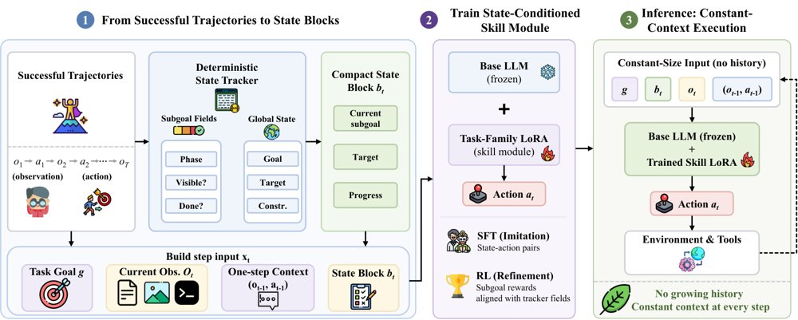
上下文到权重的技能学习流程：确定性tracker生成状态块，逐步SFT后用子goal奖励RL精炼任务族LoRA。
解决了什么问题。ReAct式Agent靠回放历史、技能说明和检索记忆维持进度，重复工作流每步都要重读相同过程，上下文随回合增长；云端API还会暴露中间敏感上下文，本地模型则不够可靠。个人Agent因此同时受隐私、成本和能力约束。
方法。作者为每个任务族冻结基座模型、训练一个LoRA技能模块。确定性tracker把交互压缩成状态块，成功轨迹转成逐步SFT样本，再用与状态块字段对齐的子goal奖励做GRPO式在线RL。推理时只输入任务指令、当前观测、一步上下文和状态块。
关键结果。在Qwen3-8B上，SFT+RL取得ALFWorld seen/unseen 83.6%/89.6%、WebShop 76.8%成功率、SciWorld 62.9%/66.4%；WebShop得分84.0，SciWorld得分79.7。每轮提示token在ALFWorld为183.8（ReAct-full为1310.5），WebShop为488.0（ReAct-full为3092.7），论文称相对ReAct-1step少2.1–3.0×、相对full少4–7×。ALFWorld每episode总token从ReAct-full的34,199降至3,251。
为什么值得看。这提供了一条把重复流程从提示词搬到权重、以固定小上下文运行个人Agent的路径，有望降低推理token成本，并减少每步向外部API发送长历史的必要。
局限 / 存疑。状态tracker和奖励规则仍需按任务族设计并人工校验，论文虽用GPT-5.5离线起草规则，但rollout时不调用LLM judge；评测仅限文本环境，新技能必须训练新适配器，不能零样本迁移。与已发表结果的比较并非完全受控，训练目标、数据构造和实现细节不同。
基础大模型 & 基础模型底层研究
AI 智能体 Agent / 自主智能
alphaXiv · arXiv
TAO：工具感知的智能体服务联合调度
TAO在GPU集群与CPU工具分离的智能体服务中，联合评估工具就绪与KV缓存价值，并用动态规划做会话选择与放置。
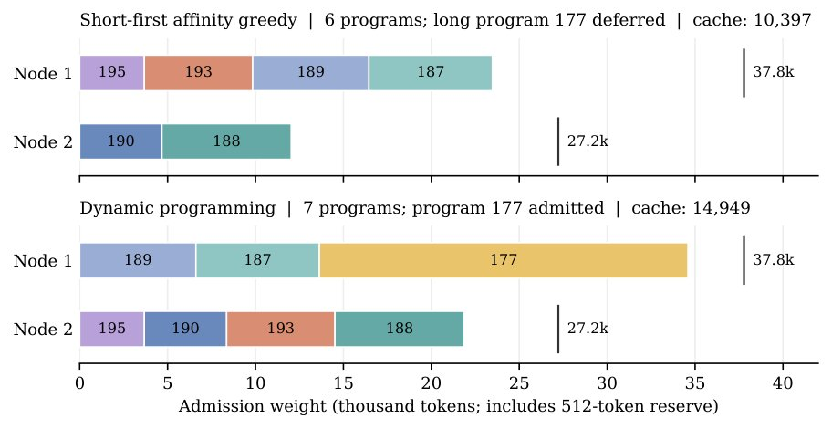
一个重建的回放快照：DP接纳7个会话，而短任务优先的affinity-greedy启发式只接纳6个；候选宽度表示接纳权重（含512 token预留），DP接纳了长上下文会话177，启发式则在用较短程序填满容量后将其推迟。
解决了什么问题。在CGDC场景中，智能体会话在GPU推理与分布式CPU工具执行之间交替，外部工具调用使推理需求出现中断。现有系统评估会话时通常忽略工具调用延迟，只把工具时序当作KV复用或token数的替代信号；决策阶段又逐会话套用启发式打分与路由，难以考虑多个会话对同一节点容量的竞争。
方法。TAO为每个会话–节点对构造三元组价值：带时间衰减的KV缓存信用、二值化的工具返回就绪信号和token占用，其中就绪预测结合工具进度暴露、解析的sleep命令与历史时长。随后，一个容量状态动态规划在冻结快照上联合选择等待会话并分配到节点，异步执行器在应用前复核实时状态。
关键结果。在12组模型–负载–并发设置中，相对各指标最佳基线，TAO最多降低26.8%延迟、36.3%平均TTFT，并提升29.5%解码吞吐；消融中完整配置解码1417.97 tok/s，去掉就绪降至1363.06 tok/s，用BFD替换DP降至1233.72 tok/s。
为什么值得看。把工具返回时序纳入调度价值，并将会话级评估与联合放置解耦，为智能体服务提供可扩展的调度接口，也兼容非智能体聊天负载。
局限 / 存疑。局限在于DP只对冻结且离散化的问题精确，取整可能排除原本可行的方案，容量预算耗尽时回退到BFD（64个DeepSeek worker下回退率5.24%）；收益也非全覆盖，Qwen3-32B SWE-verified在128 workers时延迟比ThunderAgent高2.5%。此外，35个可重建快照中DP仅在6个（17.1%）改进启发式目标，说明联合优化的增益依赖快照中的竞争程度。
AI 智能体 Agent / 自主智能
AI 工程、推理部署、系统方向
alphaXiv · arXiv
从看清细节到串联证据：多区域合成数据训练 VLM
上海交大与蚂蚁等提出数据合成框架 EvidenceConnect，用单图多区域问题训练 VLM，25 个基准全线提升。
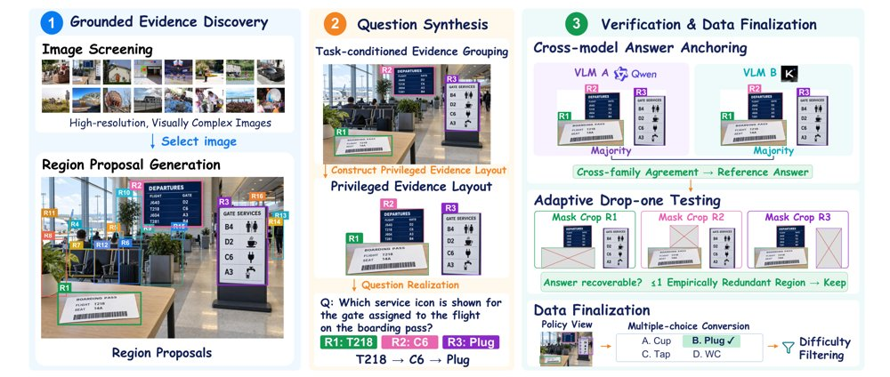
EvidenceConnect 流程：从单张图像选出相关区域并构造特权裁剪视图生成组合式问题，经跨模型答案锚定与逐一去区域检验后，转为多项选择题并做难度过滤；训练时策略模型只看到带区域轮廓的完整图像。
解决了什么问题。空间感知与多模态长上下文理解分别支撑具身智能和多模态智能体，但两者都缺少可规模化的高质量监督：空间关系标注需要精确定位与多物体关系 grounding，人工昂贵、自动生成器又常幻觉关系；长序列上仍然可回答的多样问题也难以自动构造。作者认为这些任务共享同一底层原子能力——「连接证据」，即找出相关视觉事实、绑定到正确实体、恢复关系并整合成答案。
方法。EvidenceConnect 从单张高分辨率图像中选出 3–7 个相关区域，用只在数据构造阶段可见的「特权」放大裁剪视图生成需要比较、聚合或链式推理的组合式问题。候选答案只有在来自不同模型家族的两个 VLM 多数一致时才保留为参考答案，再通过逐一遮罩所选区域的 drop-one 测试剔除答案并不真正依赖证据的问题。最终每条样本配上带彩色区域轮廓的原始整图，转为四选项选择题并做难度过滤，仅用 GRPO/RLVR 训练，不做监督微调。
关键结果。以 Qwen3.5-4B/9B 和 Qwen3.6-27B 为基座，ZwZ2 在全部 25 个基准上都优于基座，总体平均分分别从 49.41 升至 54.79、51.63 升至 56.59、55.52 升至 60.51。4B 上 ViewSpatial-Bench 从 37.43 升至 45.26（+7.83），MileBench 从 60.08 升至 70.08（+10.00）；细粒度与空间感知平均提升 5.2–6.3 分，其中 MIMIC 最多 +11.1、CountQA 最多 +10.8，27B 上 ERQA +10.5。仅用 20.4K 合成样本时，11 个基准平均 53.86，高于用 73K 样本的 ZwZ（49.86）和基座（47.16）。ZwZ2-27B 总体 60.51%，高于论文报告的 GPT-5.6-Luna（54.02%）、GLM-5.3-Flash（57.24%）与 DeepSeek-V4.1-Flash（55.47%）。
为什么值得看。如果「连接证据」确实是一项可迁移的原子能力，那么训练数据昂贵甚至难以构造的任务（具身空间推理、多模态智能体、长上下文理解）都可以借助更易合成、更易校验的替代数据获得提升。论文显示只用单图数据训练，增益也能外溢到多图、对话与交互场景。
局限 / 存疑。单图监督并不直接建模跨帧或时序依赖，扩展到视频证据仍是未来工作，且 RLVR 只验证到 27B 参数，更大模型或预训练阶段是否受益未知。增益也不均匀：MMLongBench 视觉核心在 128K 上下文上 4B/9B 仅与基座持平，消融中 drop-one 验证令 ERQA 反降 4.00 分，用原图而非特权视图合成时 Chartography 和 ERQA 反而分别高 4.00 和 4.75 分。
基础大模型 & 基础模型底层研究
计算机视觉 CV
alphaXiv · arXiv
744M开源嵌入模型统一文本图像音频视频
谷歌发布744M参数开源多模态嵌入模型EmbeddingGemma 2，将文本、图像、音频、视频及交错组合映射到同一向量
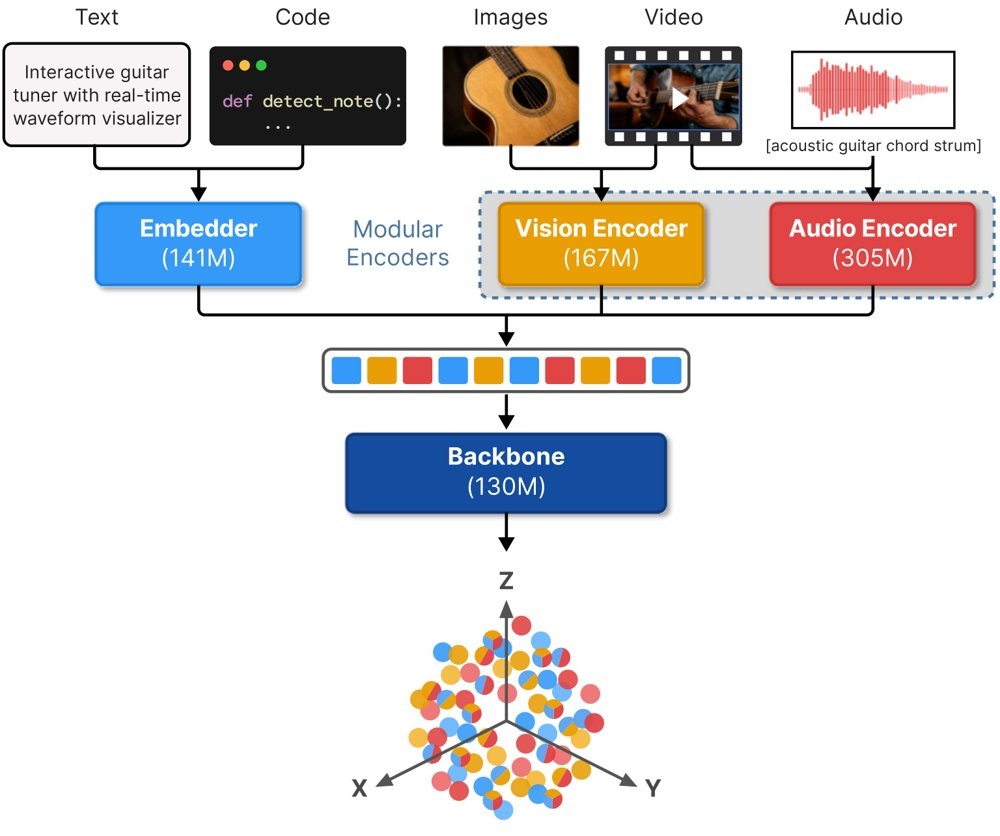
EmbeddingGemma 2原生将文本、图像、视频、音频及其组合映射到一个语义对齐的统一向量空间。
解决了什么问题。现有多模态嵌入模型分两类：CLIP、SigLIP一类的双塔模型虽然跨模态检索强，但无法原生处理图文音交错输入的模态交互；另一类由多模态大模型改造而来，参数量动辄数十亿，对延迟敏感、高吞吐或需端侧部署的场景代价过高。依赖ASR和图像描述器把音视频转成文本的做法，还会丢失细粒度视觉细节与非语言、环境声音信息。
方法。模型以Gemma 4为起点：271M参数的双向注意力Transformer主干，加167M参数的ViT视觉编码器和305M参数的USM式Conformer音频编码器，各模态软token拼接进同一序列后做均值池化与ℓ2归一化。相比Gemma 3n/4，它去掉了PLE专用的查找表，只用主嵌入投影生成逐层输入；训练分三阶段课程，先约300B token纯文本预微调，再约2T token多模态预微调（仅用蒸馏），最后约600B token多模态微调（换成对比损失、spread-out正则和MRL）。
关键结果。在MTEB(Code)上Mean(Task)为78.68，高于前代EmbeddingGemma 1的68.76，并接近榜单领先者2分以内；MTEB(Multilingual, v2)为61.36（前代61.15），但MTEB(English, v2)从69.67退到68.46。多模态侧MMEB-v2 Mean(Task)为59.01，MIEB(lite)为60.17，MAEB为49.87，MSEB(Retrieval)用原生音频达69.54，而前代用ASR仅50.95。经int4 per-channel量化后，在Pixel 11 Pro上的推理峰值内存为纯文本191MB、文本加视觉447MB、全模态567MB。
为什么值得看。它把多模态嵌入压到1B参数以下，并支持按模态选择性加载编码器（纯文本271M、视觉语言439M、音频语言577M）、70至1120的可调视觉token预算、768到128维的MRL截断和量化权重，使端侧与高吞吐检索场景可以实际部署。
局限 / 存疑。英语文本检索相比前代出现小幅回退，MAEB上与部分更大模型仍有差距（如986M的jina-embeddings-v5-omni-nano为50.14），按说话人性别等副语言零样本任务表现很差（VoxPopuliGenderClustering仅0.40）；此外不少基线分数取自公开榜单而非统一复现，量化与浮点评测所用的harness也不完全一致。
基础大模型 & 基础模型底层研究
alphaXiv · arXiv
扩散语言模型RL的token级信用分配
用去噪过程中掩码位置置信度的提升来估计token贡献，按词性分组后在RL中做时间步选择与token级信用分配。
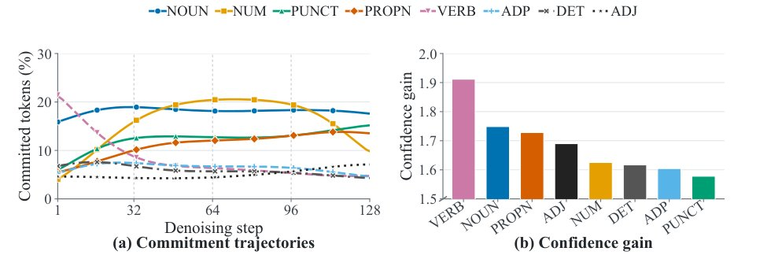
图1：基于GSM8K训练集rollout的初步分析，(a)不同词性类别在各去噪步的提交时机，(b)单个token提交后剩余掩码位置预测置信度的提升（按词性类别平均）。
解决了什么问题。扩散语言模型通过多步迭代去噪生成文本，token逐步被提交，每次提交都会影响剩余掩码位置的细化。现有的RL方法主要依赖序列级结果奖励，难以判断哪些token的提交真正帮助了后续去噪，因此信用分配过于粗糙。作者先用GSM8K rollout做了初步分析，发现不同词性类别在提交时机和对剩余位置置信度的提升上存在明显差异。
方法。DTCA用「提交某个token后，剩余掩码位置的最大预测概率之和提升了多少」来估计该token的细化贡献，并在RL训练前用离线去噪rollout逐token额外前向计算这些量，再按词性（POS）类别取平均，归一化成[0.8, 1.2]范围内的类别权重。训练时，这些权重一方面用于给每个去噪时间步打分（分数为各类别权重与(1-p)乘积之和），按累计分数覆盖70%、步数限制在2到32的方式选出信息量高的时间步；另一方面在每个时间步内对token信用做归一化加权，使各时间步平均信用保持为1。此外还借用OPEFO的一阶熵变估计，在扩散设定下按token级熵增或熵减对学习信号做缩放，并恢复每个响应的总信用。
关键结果。在LLaDA-8B-Instruct上，DTCA在MATH500的128/256/512生成预算下分别比基座模型提升9.0、6.8、4.8个百分点（39.8/43.2/44.0 对 30.8/36.4/39.2），在GSM8K上分别提升5.3、2.1、2.5个百分点（80.6/85.3/85.4 对 75.3/83.2/82.9）。消融显示，在256预算下去掉「贡献信用」会使MATH500和GSM8K分别下降3.8和2.4个百分点，去掉「熵校准」各下降1.4个百分点；在512预算下去掉熵校准则分别下降4.2和3.5个百分点。训练动态方面，401–500步区间DTCA平均奖励0.537、策略熵2.00 nats、平均KL 0.36，而RLDF为0.482、1.78 nats、0.89。
为什么值得看。它把扩散语言模型RL中的信用分配从序列级推进到去噪步与token级，并且贡献信号来自去噪动力学本身而非额外的奖励模型，思路可以迁移到其他掩码扩散模型的RL后训练。
局限 / 存疑。贡献估计依赖spaCy的POS标注与词跨度对齐质量，且「置信度提升」这一贡献定义本身缺少更严格的理论刻画；POS权重在训练前离线固定，不随策略更新而调整。实验只覆盖LLaDA-8B-Instruct上的数学推理，代码生成等其他任务、以及其他扩散架构上的适用性尚未验证，熵变相关分析也只是基于训练信号的一阶估计而非参数更新后的实测。
基础大模型 & 基础模型底层研究
生成式 AI
强化学习 RL & 序列决策
alphaXiv · arXiv
机器人策略可用质量标签调节执行质量
研究者提出 QCP：把执行速度、平滑度等质量分数量化为标签作为条件输入，并用迭代事后重标注把可控范围推出示教数据之外。
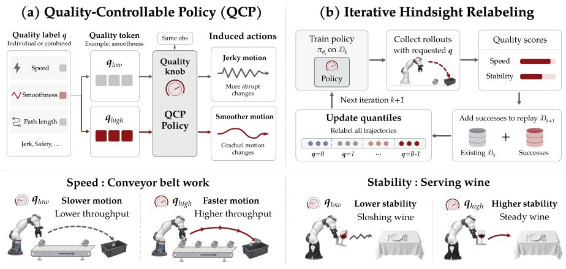
QCP 概览：左为推理时以量化质量标签为条件控制执行质量，右为迭代事后重标注把成功 rollout 的质量分布推向更高，从而扩展可控范围。
解决了什么问题。机器人策略通常只以任务是否成功作为训练信号，行为克隆会把示教中快慢、平滑或抖动的执行方式平均在一起，部署时无法按需调节。已有质量可控策略受限于静态示教数据，覆盖的质量范围有限，缺少最高速度、理想平滑度这类部署真正需要的高性能区间。
方法。QCP 用规则化分数函数测量每条成功轨迹的质量属性，按经验分位数将其量化为 B 个等频标签，训练以观测历史和标签为条件的流匹配策略；推理时用户指定标签即可调节执行行为。为突破示教范围，作者提出迭代事后重标注：每轮在最高标签下收集 rollout，保留成功样本，按实际测得质量重新标注并与原示教一起重新分箱，再从头训练策略。
关键结果。在 Robomimic Square 上，仅用示教训练的初始策略已能响应标签：请求最高 bin 时平均 193.7 步完成任务，请求最低 bin 时为 308.1 步。迭代 5 轮后，Square+Speed 的成功率达 82.2%、平均 120.3 步。作者用 IQR 归一化的 Wasserstein-1 距离衡量分布偏移，平滑度和关节路径长度均超过 1.5，说明 rollout 质量分布已超出初始示教范围。真实机器人上，传送带任务把末端速度从 188.6 mm/s 提到 257.6 mm/s（+36.6%），吞吐从 8.2 提到 13.0 罐/分钟（+59.3%）；端酒任务把托盘倾斜角从 0.0660 rad 降到 0.0482 rad（−27.0%），成功率从 30.7% 升到 42.0%。
为什么值得看。它把「怎样执行」变成推理时可调的输入，并证明在线收集加自动重标注能在无需人工质量标注的情况下持续抬高可控质量上限，对传送带、端酒这类对速度或稳定性有硬性要求的部署有直接意义。
局限 / 存疑。质量轴与分数函数仍需人工设计，每个任务都要单独训练并每轮从头重训；真实实验仅两个任务、初始数据很小（端酒只有 50 条成功示教），结论的统计支撑有限。此外分箱数增加会明显牺牲成功率（32 个 bin 时成功率降至 28.1%），作者也承认连续分数条件化的对比因请求值选取方式不同，尚不能排除连续条件化本身。
强化学习 RL & 序列决策
机器人 & 具身智能
alphaXiv · arXiv
智能体团队边优化边重组，反超生产级内核
让监督智能体在停滞时重组角色与协作，MLA 解码内核以 1.21× 平均超越 FlashInfer。
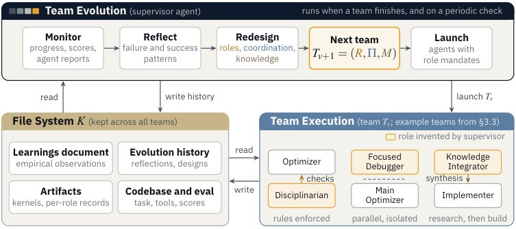
Evolving Agent Teams 框架：团队执行层通过工具调用与执行反馈让编码智能体推进任务，团队进化层充当元优化器，分析此前的成败模式并针对当前发现阶段调整团队构成、角色分工、协作协议与知识管理。
解决了什么问题。在 GPU 内核优化这类开放式问题上，代码智能体往往开局进展很快，随后陷入局部最优：为了好实现而选架构受限的设计路线，把预算耗在局部调参上，不再回头啃需要大量调试的难方案。论文举的例子是 DeepSeek-V3 的 MLA 解码内核，单智能体反复失败后放弃 WGMMA 路线，退回到更简单但效率更低的 WMMA 实现；固定角色的多智能体团队同样受困，因为优化过程会经历正确性、硬件原语调试、瓶颈剖析、架构重设计等性质不同的阶段，静态组织很快与当前阶段错配。
方法。作者提出 Evolving Agent Teams，分两层循环：团队执行层由若干带 shell、可读写文件、能调用编译器和 profiler 的 Claude Code 智能体按当前配置干活；团队进化层由一个监督智能体在团队跑完或定时触发时，检查进展、反思失败模式（如滑向简单路径、跨团队知识丢失、卡在调试、过度微优化），并重新设计角色、协作协议和知识管理三要素。两层之间用一个持久文件系统连接，其中包含累积经验的学习文档、每个团队的产物以及监督者的进化历史，使每次重组都能继承此前的成功与失败记录。
关键结果。在 MLA 分页解码上，预算对齐时系统达到 0.74×（相对生产 FlashInfer），Claude Code 为 0.51×、K-Search 为 0.61×；追加预算后达到 1.21× 平均加速，47 个生产负载中 36 个胜出，其余 11 个为 0.86–0.99×。消融显示固定四角色团队为 0.31×、Codex（GPT-5.5 xhigh）为 0.28×，作者据此把 0.31×→0.74× 的差距归因于团队进化本身。其他任务上，GDN prefill 从 2.2× 提升到 4.06×（21 个团队版本），GEMM+AllReduce 达到 1.56×（ThunderKittens 为 1.54×），Flash-KMeans 的 CUDA 重写默认负载为 1.71×；在 KDA prefill 上，AMD MI350X 比 vLLM 手写 HIP 内核快 3.01×，B200 比 FlashKDA 快 3.44×；Apple M4 Pro 上的 MoE offload 解码为 30.3 tokens/s（单智能体方案 28.2，起点 26.7）；RoboDojo 42 个任务在留出种子上得分 62.1，高于榜单最佳的 55.3。
为什么值得看。它把「搜索过程本身」当作优化对象，而不是只优化候选程序，为长周期、阶段性质会变化的开放式工程任务提供了一个可复用的多智能体元优化范式。
局限 / 存疑。论文自述每个主实验设置只跑两次、第 4.7 节的额外设置各只跑一次，统计结论有限，成本-性能 Pareto 分析和更嘈杂领域的受控研究都留作未来工作；此外 MLA 上仍有一个负载的最佳内核不及 Claude Code，且部分结论依赖作者自建的评测与按公开定价折算的成本口径。
alphaXiv · arXiv
用世界想象强化动作推理，VLA 泛化提升
ThinkWorld 用跨具身共享的离散运动 token 表示动作，以想象未来与观测未来的对齐作为奖励，让人类视频无需动
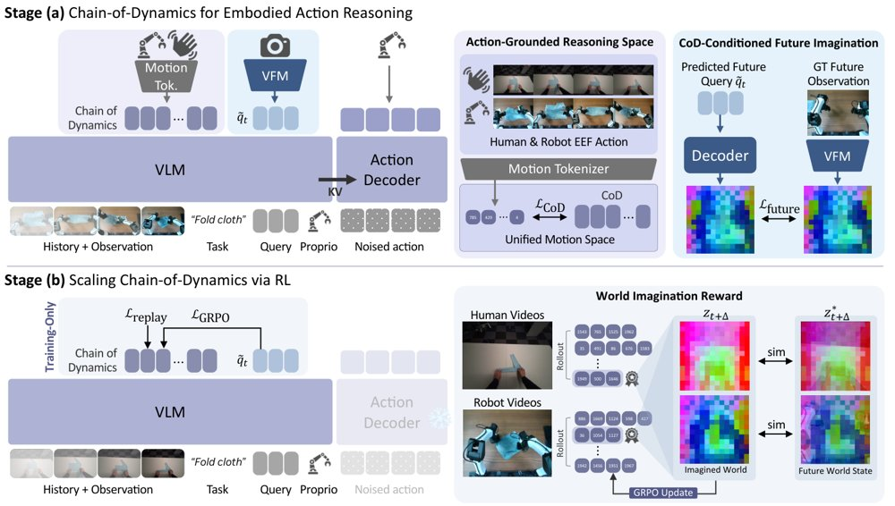
ThinkWorld 的两阶段训练：阶段（a）把机器人动作与标注人手动作 tokenize 成统一离散运动空间以接地 CoD 推理，并由 CoD 条件的想象预测未来视觉特征；阶段（b）用想象与观测未来的对齐作为可扩展奖励，在无动作标注的人类与机器人视频上强化 CoD 推理。
解决了什么问题。视觉-语言-动作（VLA）模型的泛化能力受限于带动作标注的机器人演示的多样性与覆盖范围。人类视频的行为与环境多样性远高于机器人数据，但缺少可直接执行的动作。潜在动作模型虽可扩展到无标注视频，推断出的变量约束不足，可能只捕捉外观变化或相机运动；全监督方法依赖精确的姿态估计与人类到机器人的对应关系，因此学习人类视频时存在「动作接地强度」与「行为覆盖广度」之间的权衡。
方法。作者提出 Chain-of-Dynamics（CoD），把机器人动作与标注的人手运动统一映射为归一化 delta 末端执行器表示，再用 FAST 式运动 tokenizer 离散化为共享词表上的运动 token 序列，作为跨具身的动作推理接口。模型在 CoD 之后追加可学习 future query，在冻结的 DINOv3 特征空间中预测 1 秒后的未来视觉表示，先以动作标注数据做监督初始化。随后用 GRPO 做强化学习，奖励来自想象未来与观测未来在运动加权 patch 上的相似度，因此无动作标注的人类与机器人视频都能提供监督；部署时不生成 CoD，也不做未来预测。
关键结果。在 LIBERO 上平均成功率为 97.3%，在 LIBERO-PRO 上为 55.6%；其中任务偏移 31.9%、环境偏移 60.9%，分别比 VLA-JEPA 高 11.1 和 19.9 个百分点。真实双臂 YAM 平台上，ID 条件 60 次试验全部成功，OOD 条件 52/60 成功，宏平均与微平均成功率分别为 94.4% 和 93.3%，最强基线 MolmoAct2 为 62.2% 和 60.0%。控制机器人数据量不变、把人类自我中心视频比例增至 50% 时，LIBERO-PRO 成功率从纯机器人基线的 45.4% 升至 47.8%，比同等训练规模的纯机器人对照组高约 1.2 个百分点。在包含历史帧、未来预测、CoD 和 RL 的累积消融中，平均成功率依次为 40.1%、40.7%、50.4%、54.4%、55.6%。在固定 CoD 开/关的对比中，未来特征余弦相似度为 0.74 对 0.71–0.72，在运动量前 25% 的 patch 上为 0.62 对 0.54–0.55。论文给出训练使用 128 张 H100 做 SFT、64 张做 RL。
为什么值得看。它把「预测未来」从控制输出改成训练时的奖励信号，使没有动作标注的人类视频能直接监督动作推理，并在部署时丢弃推理开销，为扩展机器人学习的数据来源提供可行路径。
局限 / 存疑。作者在附录中承认结果来自单一训练种子，报告的置信区间只反映评估波动，而非独立训练间的差异。LIBERO-Plus 上相机与噪声扰动明显弱于 DreamVLA（46.9% 对 65.0%、62.7% 对 84.9%），真实机器人评测也仅限三个任务与少量组合任务，规模仍小。
alphaXiv · arXiv
GEPA-Curator：用任务策展改进提示优化
GEPA-Curator 在优化前筛选任务并检索历史成功轨迹，多个智能体基准上最高较 GEPA/ACE 提升 20.7%
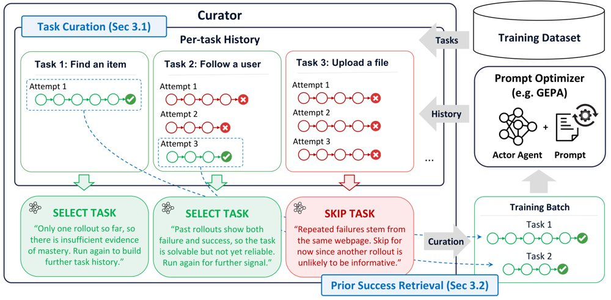
系统示意图：Curator 作为外循环读取任务历史，筛选小批量任务并检索历史成功轨迹，再交给提示优化器执行和反思。
解决了什么问题。现有反思式提示优化器假设失败轨迹含有可泛化信号，但智能体失败也可能源于工具缺失、执行框架限制、随机性或评审噪声，未必该归因于提示。仅靠验证集门控在变异后筛选，无法阻止噪声进入反思。因此需要先策展任务与上下文。
方法。GEPA-Curator 作为外循环 harness 维护每任务历史，包含任务策展与先验成功检索两个组件。任务策展优先探索不足任务，并临时跳过稳定成功、外部原因失败或评估不一致的任务，跳过任务会在后续 epoch 重访。先验成功检索为失败任务选择性提供过去可信成功轨迹，作为反思时的对照上下文；两者只作为额外元数据输入现有优化器，不改变优化器本身。
关键结果。WebArena 上，以 Gemini 3.1 Pro 为优化器时 GEPA-Curator 总体成功率 82.1%，高于 GEPA 的 78.7%（seed 72.4），聚合提升 3.4%，单站最高提升 7.4%；以 Claude Opus 5 为优化器时总体 84.5%，高于 GEPA 的 79.5%（seed 73.1），聚合提升 5.0%。附加基准上，Gemini 优化器下平均较 GEPA 提升 14.3%、较 ACE 提升 5.0%；Claude 优化器下平均较 GEPA 提升 8.1%、较 ACE 提升 12.6%，其中 ALFWorld 98.4%、AppWorld Test-N 68.8%、Test-C 46.4%、τ-bench 82.9%（与 GEPA 持平）。GitLab 消融中完整方法 88.6%，仅任务策展 84.2%，仅成功检索 84.7%，GEPA 82.8%。效率版非 WebArena 总成本 173.98 美元，低于 ACE 的 768.69 美元，平均准确率高 9.2%，总优化成本约为 GEPA 的 1.31 倍。
为什么值得看。这项工作把“从哪些经验学习”提升为自改进智能体的核心问题，提示优化器可通过外挂策展减少噪声失败导致的错误更新。对构建更可靠的多轮智能体有实用意义。
局限 / 存疑。方法建立在简化的贪心 GEPA 上并去掉了 Pareto 候选选择，Curator 本身依赖 LLM 判断，可能误判或过度弃权。QA 类基准收益有限，HotpotQA 上还比 GEPA 低 1.3%，实验也限于有限基准和两种优化器模型。
alphaXiv · arXiv
细粒度记忆检索让自回归多镜头视频更连贯
CineMem 把 KV cache 在线聚类，让每个 query-head 独立检索历史记忆，15 秒多镜头视频的 P

CineMem 框架总览：多阶段适配把双向模型转为带记忆检索的自回归多镜头生成器，推理时每个 query-head 从首 chunk、相邻 chunk 和在线聚类检索出的候选簇中取记忆，训练时用重采样真值帧构造记忆输入以缓解误差累积。
解决了什么问题。自回归视频生成靠记忆检索维持长程依赖，多镜头场景尤其需要在镜头切换带来的大幅视觉变化下保持语义连续。已有方法多在帧级别检索，且所有 query token 共享同一份历史上下文，忽略了不同 query 与注意力头对历史信息需求的异质性，造成检索冗余和历史记忆利用率低。
方法。作者先把双向视频模型经多阶段适配转为逐 chunk 的自回归多镜头生成器，并用重采样上下文训练缓解长程 rollout 的误差累积；在此基础上分析全记忆注意力下的 token 级记忆选择模式，发现历史 token 呈现跨帧的语义聚类结构，且各 query-head 的偏好差异明显。据此提出在线聚类 KV cache（按余弦相似度分组，用分裂/合并与负载惩罚保持簇均衡）和 query 级检索，每个 query-head 对独立选取最相关的簇。
关键结果。模型基于 Wan2.1-T2V-1.3B、用 16 张 NVIDIA H200 训练，在 15 秒多镜头视频上 PTCS 为 0.8242，高于 MultiShotMaster 的 0.7984 和 HoloCine 的 0.7385；过渡控制 0.9960、镜头内一致性 0.9716。理论效率上，聚类检索（K=28、S=1024）总 FLOPs 为 638.82 T，略低于帧级检索（K=20）的 650.02 T，明显低于全历史的 932.56 T。30 人评分实验（原文为 30 条 prompt 的用户研究）中，镜头间一致性均分 4.37±0.31（5 分制）。
为什么值得看。它说明记忆检索的粒度应当对齐注意力本身的选择行为，而非沿用固定的帧级分组，这为在固定记忆预算下扩展自回归长视频生成提供了可复用的设计思路。
局限 / 存疑。实验基于 1.3B 的小规模骨干和有限训练数据，作者承认生成画质可能落后于大规模扩散模型；复杂多实体镜头切换仍会失败，例如角色消失和细节不一致，且 CausalCine 权重未公开，未能直接对比。
生成式 AI
alphaXiv · arXiv
用标量伴随替代雅可比积，加速流策略Q学习
预训练流策略的批平均速度雅可比近似对角占优，作者据此给出闭式标量伴随，省去逐步向量–雅可比积，并在OGBench与真机上
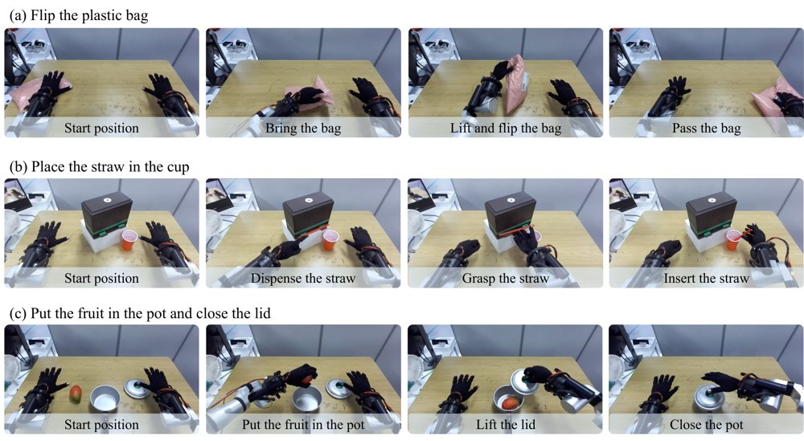
三个真实机器人操作任务总览：从上到下依次为翻塑料袋、把吸管放进杯中、把水果放进锅里并盖上盖子，每行从左到右展示任务进程。
解决了什么问题。用离策略RL微调流策略时，评价函数只告诉最终动作好不好，需要把这一价值信息回传到每个流步。伴随匹配通过积分伴随ODE做到这一点，但每个流步都要对策略做一次向量–雅可比积，开销随流步数和策略规模增长，难以扩展到大型预训练策略。
方法。作者观察到预训练流策略的批平均速度雅可比集中在对角线上，于是把雅可比近似为标量的单位阵倍数，得到闭式解：每个流步的伴随只是最终动作处评价函数梯度乘以流时间τ，无需任何向量–雅可比积，称为标量伴随。由于该更新直接依赖策略自己生成的动作处的评价梯度，他们再加一项只在该动作上生效的价值惩罚（相对数据集动作的价值之差），构成SQAM。
关键结果。在OGBench 50个任务、8个种子的离线1M步评测中，SQAM总体成功率75%，最强基线TRQAM为68%；增益集中在四个最难的域，分别比各域最强基线高21、18、22、35个百分点，其中cube-quadruple上最强基线为19%、SQAM为54%。真实双臂机器人三个任务各30次留出评估：监督微调为15/30、7/30、4/30，SQAM离线转在线后为25/30、15/30、13/30。更新开销方面，论文报告精确伴随在每种策略宽度下都约慢一半，且差距随流步数增加而扩大（正文未给出具体秒数）。
为什么值得看。它表明流策略的伴随不必逐步反传雅可比，一个粗糙的标量近似就够用；作者的结论是瓶颈更多在评价函数的学习方式，而不在策略更新本身，这为流策略的离策略RL指出了一个更廉价的改进方向。
局限 / 存疑。标量伴随建立在“批平均速度雅可比对角占优”这一经验观察上，作者明确表示并未解释该结构为何出现；在两个操作域上标量伴随与精确伴随的夹角更大，单独使用会掉点，必须靠价值惩罚补救，而cube-double上该惩罚反而降低离线成功率因此被关闭。真实机器人实验每任务仅30次评估且各任务单独微调，无法说明多任务共享一个策略时的收益；另外EXPO-FT基线在作者修改过的协议下运行，对比并非原样复现。
强化学习 RL & 序列决策
alphaXiv · arXiv
用表面法线转台做主体一致的全向视频生成
OmniShowcase 从 4 张参考视图重建 3D 几何、渲染表面法线转台作为条件，无需逐主体优化即可生成环绕主体的
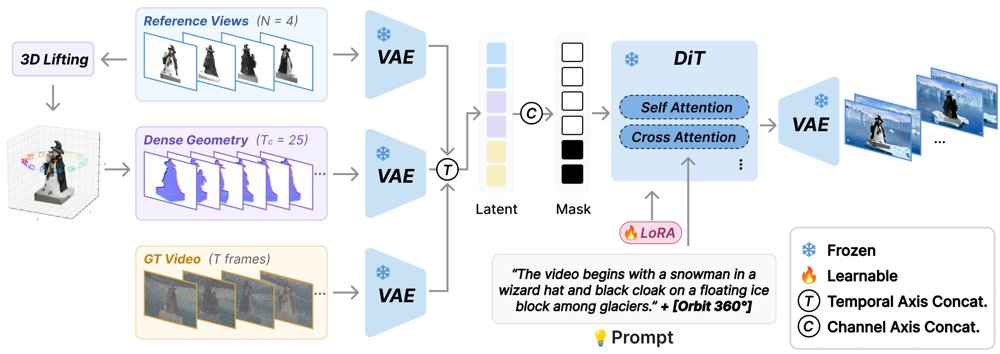
从 4 张参考视图重建 3D 并渲染表面法线转台，与参考图一同注入 LoRA 微调的图生视频扩散 Transformer 参考通路，无需逐主体优化即可生成目标视频。
解决了什么问题。主体到视频（S2V）生成多以单张参考图为条件，相机转到输入中不可见的表面时，模型只能靠生成先验推测几何与外观，轮廓和结构随之漂移。近期方法虽引入多张参考视图，却没有显式给出连接这些视图的 3D 结构，训练数据本身也不保证视角变化对应同一 3D 主体。
方法。作者用 3D 资产在 Blender 中渲染目标轨迹与 4 张参考视图，再用视频 inpainting 把主体合成进提示词驱动的背景，构建 Showcase-4K。条件端从参考视图前馈重建几何（点图加 3D 高斯），沿 15° 仰角渲染 25 帧表面法线转台，与参考图一起作为 in-context 序列送入 LoRA 微调的 Wan2.1 I2V 扩散 Transformer。法线与目标视频分别编码后沿时间轴拼接，因此不要求两者逐帧对齐。
关键结果。在 50 个主体的 ShowcaseBench 上，DINO 主体一致性为 0.799（最好的基线 3DreamBooth 为 0.707），CLIP 为 0.925 对 0.907，MEt3R 为 0.190 对 0.325，GT-CD 为 0.0824 对 0.1717；在 NAVI（35 个主体）上 DINO 为 0.828、GT-CD 为 0.0975。消融显示，去掉几何条件后 GT-CD 从 0.0824 升至 0.2092，把法线换成纹理渲染或把转台从 25 帧减到 9 帧也均变差。44 人用户研究中，该方法在四项标准上获 70.9%–79.4% 偏好，没有基线超过 12.7%。
为什么值得看。它把显式 3D 几何作为与外观解耦的条件通道引入 S2V，并用渲染数据保证视角变化真的对应同一形状，为可控运镜的主体视频提供了可复现的数据与评测管线。
局限 / 存疑。作者自述两点局限：合成背景有时显得平板、缺少材质细节；法线转台来自把四张视图融合成单一静态重建，因此当四个参考拍摄到不同姿态的非刚性主体时，模型会收敛到一个没人摆出过的平均姿态。训练语料仅 4,000 段、2,593 个资产，远小于 Phantom 等的百万级真实视频。
生成式 AI
计算机视觉 CV
alphaXiv · arXiv
Falcon：单次前向的因果视听目标说话人提取
团队发布 RealSSA 真实场景基准与 Falcon 因果提取模型，参数 0.5M，GPU 延迟 51.3 ms。
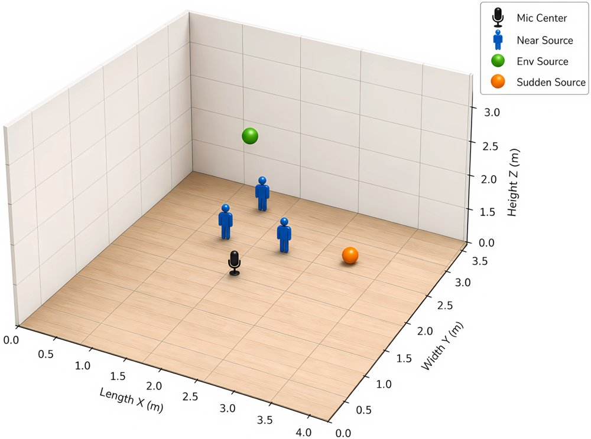
图注原文为 Small meeting，即小型会议室场景示意。
解决了什么问题。现有因果视听目标说话人提取基准几乎都把说话人数固定为两人，声学条件恒定，缺少近场与远场干扰、混响和突发噪声，也没有真实录音评测集。模型侧则相反：高性能因果架构参数与每帧计算量过大，难以部署到边缘设备，而轻量方案靠反复调用小分离器换容量，反过来抵消了延迟收益。此外，SI-SNR 只拉近目标、不显式推开近场干扰，说话人越近泄漏越严重。
方法。作者发布 RealSSA 基准，其中 RealSSA-Sim 覆盖小型会议室、中型室内、大型公共空间与户外四类场景，近场干扰说话人 1 到 5 个，有远场干扰的场景再加入 10 到 15 个远场说话人，并联合采样混响、环境噪声与突发噪声；RealSSA-Real 是单台手机录制的留出评测集。模型 Falcon 采用非对称 U-Net 分离器，在单次编码器–解码器前向中完成频率轴、时间轴与联合时频的多尺度建模，取代 SwiftNet 式的多次迭代。训练时额外加入编码器空间说话人对比损失，以干净目标和各近场干扰的编码特征作为正负参考，推理阶段完全移除，因此不增加推理开销，并可迁移到其他骨干。
关键结果。在 RealSSA-Sim 上 Falcon 取得 7.7 dB SI-SNRi（AV-TF-GridNet 为 7.6 dB），在 LRS2-2Mix、LRS3-2Mix、VoxCeleb2-2Mix 上分别为 16.4、10.5 dB 等最佳值，其中 VoxCeleb2-2Mix 相对 Swift-Net-12 提升 1.1 dB；RealSSA-Sim 上 WER 为 25.47%，比 AV-TF-GridNet 低 1.84 个百分点。在 RealSSA-Real 上 DNSMOS 为 3.276，WER 为 32.74%（在提取系统中排第二，落后 AV-Mossformer2 0.74 个百分点），目标说话人相似度 42.23 为最高。效率方面参数 0.5M、10.6 G MACs、GPU 延迟 51.3 ms，相对 AV-TF-GridNet 参数减少 91.9%、MACs 减少 95.0%、GPU 延迟减少 91.0%；对比损失在 Falcon、SwiftNet-12、Dolphin 上分别带来 0.4、0.2、0.3 dB 的 SI-SNRi 增益。
为什么值得看。它把「更真实的评测条件」和「能上边缘设备的因果模型」放在同一项工作里，说明轻量单次前向架构在拥挤近场场景下可以追平甚至超过重量级因果基线。对视频会议、助听设备这类低延迟应用，这类基准与效率数据比单一仿真集上的分数更有参考价值。
局限 / 存疑。分离器与对比损失都只处理单通道，作者把四元麦克风阵列留作后续工作；RealSSA-Real 仅约 84 分钟、10 名参与者、8 个环境，规模有限，且对比损失依赖仿真中才有的干净近场干扰源波形。此外模型高度依赖视觉输入：在 500 个样本上完全去掉视觉帧后 SI-SNRi 跌至 −9.91 dB，连续遮挡比随机丢帧损伤更大。
语音与音频 AI
alphaXiv · arXiv
VaM：用价值缓存做机器人在线强化学习
上海交大等提出 VaM，把近期价值预测作为策略输入，并用真实世界在线强化学习后训练通用机器人策略。
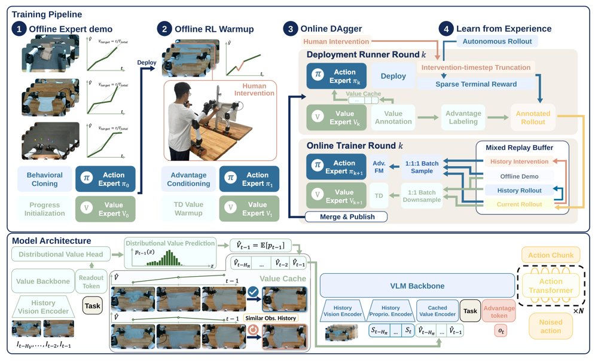
VaM 的四阶段离线到在线训练流程，以及价值专家如何把历史价值预测写入缓存并条件化动作专家。
解决了什么问题。通用机器人策略在真实世界后训练时，部分可观测性让视觉相似状态可能需要不同动作，动作选择存在歧义；离线后训练又把部署反馈与策略更新隔开，数据复用和策略迭代频率受限。现有方法常把价值函数用作过滤分数或优化权重，而不是策略的显式输入。
方法。VaM 用分布式价值专家预测任务进度，并把最近若干步的价值预测组成缓存，与视觉、本体感受历史一起输入动作专家；同时用离线示范、离策略干预和在线 rollout 联合更新价值与策略。训练分四阶段：示范初始化、离线 RL 预热、Online DAgger 和从经验学习（LfE）。
关键结果。在三个真实长时程任务上，价值缓存使最后三个在线检查点的平均绝对成功率提升 29.4%；按任务看，Box Assembly 为 96.7% 对 81.7%，Laundry Folding 为 88.9% 对 48.9%，Magnetic Bus Assembly 为 76.7% 对 43.3%。相比匹配训练预算的离线 RL，在线自主学习平均提升 32.8%；所有 LfE 检查点平均的缓存增益为 31.3%。在线调度在相同梯度步预算下完成 8× 的策略迭代，单梯度步记录时间平均降低 57.8%。
为什么值得看。如果价值缓存能缓解部分可观测性，通用机器人策略就有望在部署中持续从稀疏结果奖励中改进，而不必反复离线重训。论文给出的在线与离线时间对比也说明，异步并行的数据采集与训练可能让真实机器人 RL 更实用。
局限 / 存疑。价值缓存依赖价值函数紧密跟踪真实任务进度，因此离线 RL 预热对稳定在线训练是必要的；缓存的是价值专家自身预测，预测质量差时会误导策略。实验仅限单台机器人、三个任务，尚未验证多机器人共享经验时的扩展性。
强化学习 RL & 序列决策
机器人 & 具身智能
alphaXiv · arXiv
解耦双参考图像：频域扩散模型新框架
Dual-FDM 用 DCT 掩码分离低中高频，分别处理定制与颜色风格迁移。

图 1 展示了 Dual-FDM 基于定制参考、颜色参考与风格参考生成的个性化图像示例。
解决了什么问题。个性化图像生成需要同时利用参考图与文本提示，但现有扩散模型在图像定制和风格迁移中常出现文本对齐失败。作者观察到，问题源于去噪过程中低、中、高频段相互纠缠：低中频在早期高噪声阶段占主导，并压制文本提示的引导。
方法。Dual-FDM 将参考图映射到 DCT 频域，用掩码分离低、中、高频段。定制风格迁移把定制参考前景的中频段替换到风格参考背景中；颜色风格迁移则把颜色参考前景与背景的低频段替换到风格参考背景中。方法还用 SVD 反转奇异值构造背景矩阵，并以替换频段的信息熵比值自适应划分去噪早期与晚期。
关键结果。在定制风格迁移中，Dual-FDM_cust 的 CLIP-T 为 0.3194、CLIP-TC 为 0.5031、HPS 为 2.6007，高于 MS-Diffusion 的 0.3123、0.4680 与 2.5436；颜色风格迁移的颜色类 CLIP-TS 达 0.5015、CLIP-S 达 0.7178、DINO-S 达 0.4970，优于 StyleAligned 的 0.4832、0.6904 与 0.4437。效率方面，Dual-FDM_cust 推理时间为 10.26 秒，显存占用 12.48 GB。
为什么值得看。它把双参考解耦放到频域，为同时控制文本对齐、定制身份与风格相似度提供了可复用思路，并覆盖定制风格迁移和颜色风格迁移两类任务。
局限 / 存疑。论文自述的失败案例是：当风格参考包含极稀疏的线条结构时，替换中频的定制线索会削弱高频风格细节，导致风格信息不完整。此外，作者未报告误差棒或统计显著性检验，结论的稳健性仍需更多验证。
生成式 AI
alphaXiv · arXiv
一步生成策略DriftSpread提升在线RL效率
论文提出DriftSpread，把MaxEnt策略改进拆成critic引导的Drift和熵驱动的Spread，用同一个a

DriftSpread总览：训练交替进行critic学习与顺序的Drift–Spread actor更新，Drift用动作回归、Spread用分布匹配，使一步生成的动作先向高价值移动再扩散以体现熵。
解决了什么问题。扩散和流策略能表达复杂动作分布，但通常需要迭代采样，训练与推理成本高。在线最大熵RL要从critic定义的Boltzmann目标学习，而隐式策略没有可处理密度，熵项难以直接计算。
方法。DriftSpread从负MaxEnt目标导出两个更新：Drift沿critic梯度移动动作，并用动作回归让actor拟合；Spread用适当尺度的独立噪声近似熵诱导扩散，再以MMD和特征函数做分布匹配。两个更新顺序作用于同一个actor，无需从Boltzmann目标采样，也无需策略密度或score估计。
关键结果。在五个MuJoCo-v3任务、每任务100万次环境交互和5个随机种子下，DriftSpread在13个基线中取得最高聚合归一化回报；平均推理时间为0.15 ms/action，低于DIME的1.24 ms和两步MeanFlow策略MFPO的0.36 ms，训练成本也低于扩散、流和MeanFlow基线。
为什么值得看。它给在线RL提供了一步生成策略，在保留生成式策略表达能力的同时显著压低采样开销，让这类策略更接近实际训练和部署需求。
局限 / 存疑。理论收敛依赖固定critic、精确拟合以及小步长和长时间极限，实际训练不保证满足；实验仅限MuJoCo仿真，扩散噪声分布和尺度训练中固定，且聚合回报以DriftSpread自身均值为归一化参考，跨方法比较需谨慎。
强化学习 RL & 序列决策
alphaXiv · arXiv
S²：运动对齐关联机器人策略成功率
新论文提出免训练离线指标S²，衡量视觉-语言表征与末端轨迹几何的对齐，并在多类模型和真机上与任务成功率正相关。

S²在微调VLA、原始VLM、WAM和真实机器人策略上均与下游任务成功率正相关，支持其作为离线代理指标。
解决了什么问题。机器人基础模型通常要靠昂贵的闭环仿真或真机 rollout 评估，速度慢、噪声大且依赖基准。现有离线代理多测VQA或视频质量，反映的是被动感知或生成质量，而非表征是否为动作组织。作者受Platonic Representation Hypothesis启发，追问运动轨迹能否作为另一种模态，使更强的具身模型其感官表征更贴近物理运动结构。
方法。S²完全免训练：从DROID、BridgeDataV2或ALOHA采样片段，用模型视觉与文本编码器得到感官嵌入，用未来h步末端执行器位姿与夹爪状态构成运动表征。它分别按余弦距离和DTW找k近邻，再用共享近邻比例（centered normalized CKNNA，k=10）衡量两种邻域的重合度。
关键结果。在12个微调VLA上，S²与SimplerEnv成功率Pearson r=+0.717（模型bootstrap 95% CI +0.436至+0.912）；8个原始VLM的S²与微调后VLA成功率r=+0.681、p=0.031，而VQA分数为r=-0.154。6个WAM上r=+0.718、p=0.054；5个真实机器人策略上r=+0.831、p=0.041。负对照把参考数据从双机械臂ALOHA换成单臂DROID后，3个WAM的相关从r=+0.999降到+0.246；冻结视觉编码器使S²降41%、成功率降40%。
为什么值得看。若能在闭环评测前用S²筛模型和VLM骨干，可降低评估成本，并提供成功率之外的表示层诊断。作者认为这也指向直接优化感官-运动对齐的训练方向。
局限 / 存疑。作者明确承认证据以相关性为主，尚未证明把S²当训练目标能提升成功率；模型家族、基准和训练配方覆盖有限，每类比较模型数少，真机仅一个设定。更需注意的是，真机r=+0.831来自探索性horizon h=110，预设的h=7只有r=+0.429、p=0.236，WAM的p=0.054也未达0.05。
机器人 & 具身智能
alphaXiv · arXiv
让自回归视频模型预测更远的未来块
南京大学与腾讯ARC等提出FCP：训练时让模型跳过中间片段预测更远的未来块，推理零额外开销，物理合理性提升。
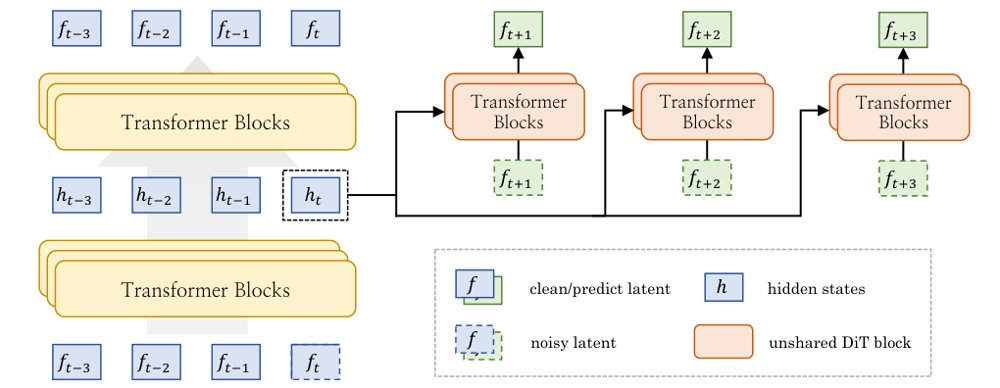
FCP 总览：自回归主干的多层中间表示经 MLP 融合后，通过 token 级 AdaLN 调制并行的辅助 Transformer 块，用于预测未来块。
解决了什么问题。自回归视频扩散模型按块滚动生成，但标准教师强制训练下，视频强烈的时间冗余使模型可以靠相邻块的局部外观与运动连续性「抄近路」完成当前块的去噪，缺少建模场景如何演化的压力。能续写视频，并不等于学到了世界该如何变化。
方法。作者提出未来块预测（FCP）作为辅助目标：在标准教师强制去噪之外，用生成器对应块 k 的中间隐状态 h_k 去预测时间上相隔 Δ 个块的未来块，且不给模型看中间那些块，从而削弱对局部连续性的依赖。实现上采用独立参数的轻量 DiT 分支，多个偏移量并行预测，互相不传递信息，也不接文本交叉注意力，仅通过 token 级 AdaLN 注入主干多层特征；辅助损失回传到主干隐状态。推理时全部 FCP 模块被丢弃，生成流程与基线完全一致。
关键结果。在 Physics-IQ Verified 上，1.3B 模型的 IQ 从 27.6 提升到 30.9；5B 模型的 I2V 从 30.4 升到 33.8、V2V 从 40.6 升到 44.4。消融显示，只正则化干净上下文或噪声目标分别带来 1.2 和 2.3 的 IQ 增益，两者合用增益 3.3；并行预测比链式预测高 0.8（30.1→30.9），加入文本条件反而使 IQ 下降 1.1。训练效率上，要达到相同 IQ 29 和 30，本文设计估计比使用全历史表示 h_≤k 的变体少 42.6% 和 50.7% 的训练算力。其他基准上，WorldModelBench 总分 7.22→7.64，PAI-Bench-G 领域分 81.13→82.38，PhyGround 提升较小（物理项 2.75→2.80）。
为什么值得看。它说明提升自回归视频生成可以靠从现有视频中挖掘更强的预测监督信号，而不必只靠堆算力或引入外部预训练编码器，且推理零成本。可视化还显示 FCP 训练出的表示空间有更清晰的空间选择性与跨帧对应关系，这对构建自回归世界模型可能有用。
局限 / 存疑。所有模型都从预训练的双向视频扩散检查点（Wan）初始化，而非从头训练，作者自己怀疑双向与自回归表示组织方式不同，可能限制 FCP 效果的发挥；消融主要在 1.3B 上完成，链式变体在 5B 上几乎没有增益甚至不涨，说明规模变大后信息泄漏问题更严重。此外表示结构化只是定性可视化，与 Next Forcing 属同期独立工作，训练数据含不可公开的内部语料，跨模型对比也难以归因于方法本身。
alphaXiv · arXiv
FLoRe：无机器人演示学习力反应人形全身操作
FLoRe 用带六轴力/力矩传感器的手持夹爪采集无机器人演示，让扩散策略预测每手力指令，并由全身控制器跟踪。
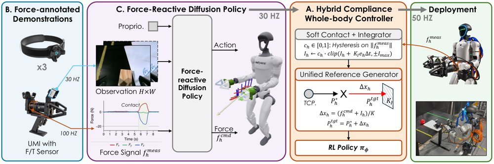
FLoRe 框架总览：两个带 F/T 传感器的手持 UMI 式夹爪和三个跟踪器无机器人记录图像、运动与接触力，力反应扩散策略以图像、状态和实测力为输入、以 30 Hz 输出关键点运动和每手力指令，混合柔顺全身控制器把力指令转成目标偏移以同时跟踪运动与力并保持其他方向柔顺。
解决了什么问题。许多日常任务不仅要跟踪运动，还要控制接触力；人形机器人需双手与全身协调施力并保持平衡，单靠运动轨迹无法指定力。无机器人演示接口通常只记录运动不记录力，而现有人形全身控制器多只跟踪运动，或把力当作扰动/降低刚度，难以准确跟踪双手力指令。
方法。FLoRe 用两个带六轴 F/T 传感器、腕相机和位姿跟踪器的手持 UMI 式夹爪，配合胸部与脚踝跟踪器采集无机器人演示。力反应扩散策略以腕图像、机器人状态和实测力为输入，预测关键点运动、夹爪宽度和每手力指令。混合柔顺全身控制器把力指令转成沿力方向的目标偏移，并用实测力误差积分跟踪力，在其他方向保持柔顺。
关键结果。在仿真中，控制器对 5–25 N 的每手力指令达到 1.03–1.06 的跟踪增益，接触力误差约 1 N，但无力指令时传感器仍有 1.25–1.50 N 底噪。真实 Unitree G1 上，FLoRe 在三个接触密集任务中成功率为 80%（24/30），位置-only 策略为 26.7%（8/30）；去掉力指令降至 36.7%（11/30），去掉力观测降至 66.7%（20/30）。真实力跟踪中，x 轴稳态力约达指令的 91%，平均稳态误差约 1.1 N，平均 1.8 s 进入 ±1 N 带，稳态波动约 ±0.3–0.5 N。
为什么值得看。把力作为演示、策略和全身控制之间的共享接口，使无机器人模仿学习能覆盖仅靠运动无法指定的接触密集全身操作。对推车、搬箱和擦表面等需要持续接触的任务具有直接意义。
局限 / 存疑。局限包括：训练中的虚拟接触面无摩擦、力指令仅为法向，切向载荷未在训练中出现；真实部署需将低于 1.5 N 的指令置零并限幅 25 N，横向和向下力增益较低且会串扰到其他轴。此外每任务仅 10 次 rollout，去掉力观测的下降（66.7%）只是趋势，统计显著性主要见于去掉力指令。
alphaXiv · arXiv
先学后画：AR预训练加扩散渲染
AR预训练学语义，扩散后训练做渲染；3B模型用6600 H100小时，GenEval 0.86、DPG 87.78。
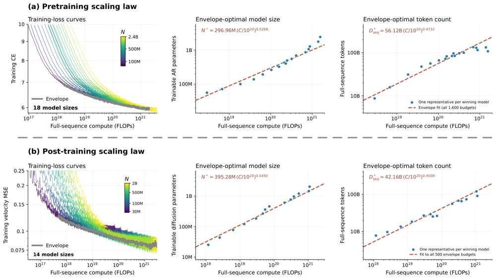
预训练与后训练缩放定律：左图给出损失随全序列算力的变化，中/右图给出包络最优的模型规模与token分配。
解决了什么问题。视觉生成既要高层语义知识，又要细粒度像素细节。现有工作常把自回归与扩散当作竞争范式，要求同一目标同时承担知识获取与渲染。论文追问：两阶段是否应采用不同学习目标，AR应预测什么，算力又该如何在两阶段间分配。
方法。先用随机顺序的自回归离散token预测做预训练，学习语义知识；随后冻结AR backbone，加入像素扩散模块，用flow matching做渲染后训练。Semantic-LM tokenizer仅用语言监督学习码本，不需要图像解码器或重建损失。作者分别拟合预训练与后训练缩放定律，并据此给出约3:2的预训练/后训练算力分配。
关键结果。在最终约400M参数的受控比较中，AR→PDM取得GenEval 65.51、DPG-Bench 71.11，高于PDM的61.16/62.56、LDM的57.34/64.33和LDM→PDM的56.61/60.01。Tokenizer对比显示，重建最好的Recon后训练仅54.67/62.98，Semantic-Recon为65.51/71.11，无解码器的Semantic-LM为64.84/67.72。缩放拟合覆盖18个AR模型（55.71M–2.43B）和14个后训练模型（25.1M–2.03B），后训练拟合渐近损失约0.0701，低于从零PDM的约0.0788；导出的后训练算力占比r≈0.40。最终约3B模型用约6,600 H100 GPU-hours，取得GenEval 0.86、DPG-Bench 87.78，约为Z-Image-Base估计训练算力的1/48。
为什么值得看。把知识获取与渲染解耦，让两个阶段分别选择目标、tokenizer和算力预算，为视觉生成提供了类似语言模型预训练-后训练的缩放配方。结果也显示，语义预训练可能降低扩散渲染的可达损失下限，而不只是加速收敛。
局限 / 存疑。作者提醒，跨系统分数比较因文本编码器、训练数据和评估设置不同而只能近似，且未证明算力分配最优；渐近损失比较把预训练权重与目标图像条件token作为整体，未分离各自贡献。此外，Semantic-LM没有图像解码器，不能独立生成图像。
alphaXiv · arXiv
跨语言安全核：只占0.12%的FFN坐标
研究者定位跨语言共享“安全核”，它仅占FFN输出坐标0.12%–0.15%，抑制它可保留约九成语言级安全效果。

所提框架总览：(a) 由不安全与安全提示的激活差计算SCAR分数，逐语言识别安全神经元集合并取跨语言交集得到SK；(b) 通过神经元激活抑制与跨语言安全状态迁移检验SK的功能相关性；(c) SK-Masked LoRA把微调引起的输出变化限制在SK坐标上。
解决了什么问题。大模型的安全能力在不同语言间明显不均衡，同一有害请求在一种语言被拒绝，换一种语言却可能得到可执行的回答，跨语言改写因此成为绕过安全护栏的捷径。现有对齐方法多依赖多语言安全数据、偏好优化或一致性约束等外部信号，没有明确指出一个跨语言共享的内部干预靶点；已有的神经元级安全研究又大多以英语为中心或只做单语分析。
方法。作者用多语言平行的安全与不安全提示，对每个FFN输出坐标计算SCAR分数，把标准化后的安全/不安全均值差与合并标准差之比，以及标准化均值差相加，每种语言取top-k=5000作为候选安全神经元，再对六种发现语言取交集得到安全核（SK）。随后通过抑制SK坐标、跨语言注入由安全拒答估计的SK激活状态这两种干预，检验SK与安全行为的功能关联。最后提出SK-Masked LoRA：冻结基座模型，只训练低秩适配器，并用二值掩码把适配器引起的输出变化限制在SK对应的FFN输出维度上。
关键结果。在MultiJail上，逐语言抑制SCAR选出的top-5000神经元使ASR升至69.63–81.06（Qwen3-8B）和69.52–81.27（Llama-3.1-8B-it），而随机抑制等量神经元时ASR接近默认（16.40→16.88、26.51→25.40）。SK仅占所分析FFN输出坐标的0.12%和0.15%，抑制它使平均ASR分别上升52.65和45.13点，保留约90%的语言级抑制效果。SK-Masked LoRA把Llama-3.1-8B-it在AdvBench-x与MultiJail上的平均ASR从28.22和29.44降到1.20和4.35，把Gemma-2-9B-it从3.42和10.16降到0.34和1.35；在未参与SK发现的五种语言上，平均ASR从14.41降到8.95（Qwen3-8B）、从18.67降到4.76（Llama-3.1-8B-it）。
为什么值得看。它给出一个可复用的内部干预靶点，把跨语言安全对齐从“堆多语言数据”转向“改对神经元坐标”，并且掩码只改动极小比例的坐标，有望降低多语言安全微调对通用能力的附带损伤。
局限 / 存疑。SK由top-k交集定义，对发现语言集合与k值敏感：排除任一发现语言后SK规模平均增加8.3%，单语言排除的增幅从+4.0%（意大利语）到+17.6%（孟加拉语）不等；实验也只在8B–9B级开源模型和GPT-4o自动裁判下完成。消融显示标准LoRA的ASR更低（Qwen3-8B为5.50、Llama-3.1-8B-it为4.71），但通用能力下降更大（Qwen3-8B的MGSM从0.560降到0.444），说明该方法是在安全与能力之间做取舍。
alphaXiv · arXiv
接触锚定重定向: 无需物体模型的灵巧手迁移
CMU与亚马逊FAR提出CARD, 把人手演示中的接触力目标直接重定向到机器人, 不需物体模型或仿真器, 接触保持率43
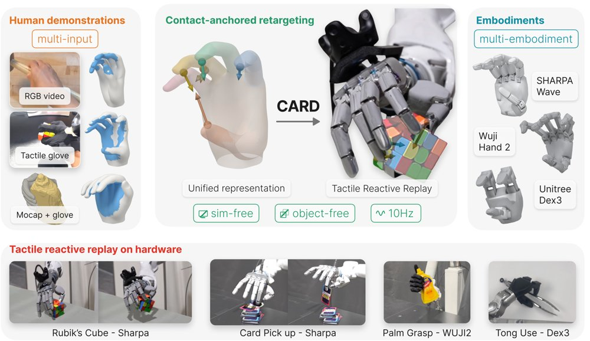
CARD流程概览: 视频、触觉手套与动捕统一为每个语义连杆带一个接触力目标的MANO表示, 经几何初始化与接触锚定优化得到关节轨迹, 再由触觉跟踪控制器在硬件上回放。
解决了什么问题。遥操作、动觉示教与外骨骼采集都要求人通过机器人本体动作, 人的灵巧性被接口限制。重定向可以绕开这一瓶颈, 但现有方法只映射指尖位置或关节角这类运动学量, 忽略真实世界的接触动力学; 毫米级的本体差异就决定回放轨迹是悬空、滑过还是压碎物体。
方法。CARD把接触力目标当作一等公民: 每条语义手部区域带一个由压力中心、推压方向和力大小组成的目标, 用GPU上的采样优化(退火CEM, 每帧1024个候选、16次迭代)求解机器人构型, 同时惩罚接触距离、摩擦锥夹角和跨帧滑移, 全程不需要物体网格、位姿或仿真器。作者提出统一的手–接触表示, 把单目视频(经新模型Vid-HACO)、触觉手套和动捕都转成带接触力目标的MANO网格序列; 跨本体迁移只需一张从人手区域到机器人连杆的语义映射表。硬件回放时, 一个积分导纳环加前馈力的触觉跟踪控制器负责在开环轨迹上维持演示的接触力。
关键结果。在自采视频、手套加动捕数据和GRAB上, CARD在43%–78%的接触帧上保持接触: 视频61.4%、手套加动捕77.7%、GRAB 43.1%, 其中手套单独为89.1%; DexPilot与AnyTeleop两种运动学基线均低于10%(3.8%–9.7%), 需要物体网格的ReGrind在GRAB上为22.5%。接触目标到指腹的中位间隙降到1.4–3.6 mm, 运动学基线为10–23 mm。硬件开环回放三个任务各10次: 仅位置回放共成功4/30, 加触觉跟踪后为25/30(锤子8/10、杯子10/10、芥末瓶7/10)。把该表示接入基于物理的重定向后, GRAB上的严格任务成功率从12%升到32%, 动捕数据从40%升到52%。视频接触模型Vid-HACO在12数据集验证集上顶点F1为84.3, 在留出的HRDexDB上为67.2, 比原版HACO高3.9个点。
为什么值得看。它把「保持接触」做成一个与本体和物体无关的接口, 意味着普通手机视频或触觉手套采集的人类演示, 可以较低成本地转成接触保真的机器人数据, 为后续训练闭环策略提供数据来源。
局限 / 存疑。重定向质量受输入演示本身限制, 开环回放无法从较大的物体位移中恢复; 在接触靠几何近邻推算的GRAB上接触率只有43.1%、摩擦锥内比例仅16.2%, 说明接触信号质量直接决定上限。此外Unitree Dex3-1与Wuji Hand 2没有触觉传感, 前者靠把抓取动作放大1.2倍、后者靠柔性内表面被动贴合, 触觉跟踪并未真正闭环; TopoRetarget与Morphometric Imitation因未开源而未做比较。
alphaXiv · arXiv
FVQ：让离散视觉 token 追平连续表示
量化误差不能预测多模态理解表现，有效比特预算是关键；FVQ 用对称并行码本突破饱和，九项平均追平连续表示。
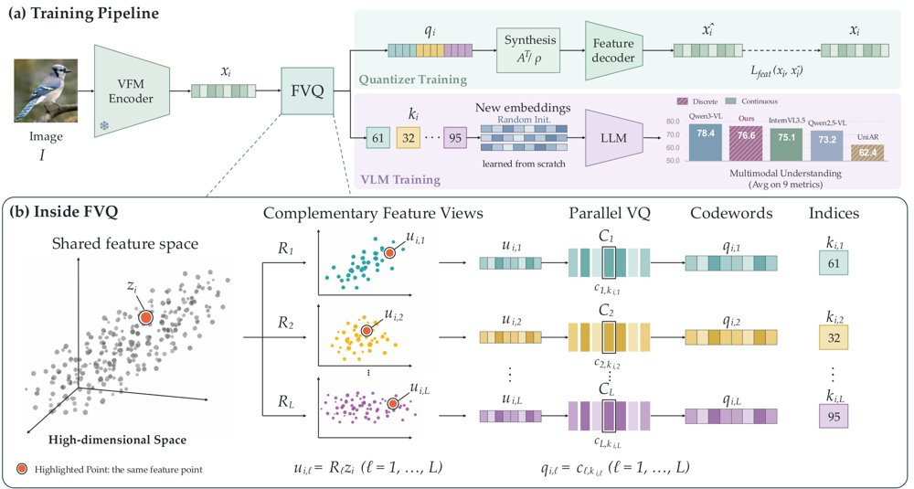
FVQ 总览：量化器训练阶段用多组稠密投影生成同一视觉特征的互补视图，由独立码本并行量化并经紧框架合成重建；随后的 VLM 训练阶段冻结量化器，只把离散索引映射到新初始化的 token embedding。
解决了什么问题。离散视觉 token 常被认为因量化误差而必然损失语义，连续视觉特征因此被视为下游性能的天然上界。作者以多模态理解为语义保真度的代理，发现重构误差相差一个数量级的离散表示反而理解更好：RVQ 奇数组 MSE 为 0.246、八基准平均 60.7，而单码本 VQ 的 MSE 仅 0.027、平均只有 51.2。真正的问题于是变成：决定离散表示语义容量的是什么。
方法。作者把现有量化器的饱和归因于新增码本信息量递减：RVQ 后续码本只编码更小的残差，PQ 则把特征切成越来越窄的通道组。FVQ 改用稠密投影把同一视觉特征映射成 L 个固定维度视图，用 QR 分解构造满足紧框架条件的分析算子，使合成端在量化前可精确还原特征，再由 L 个结构对称的独立码本并行量化。量化器训练完成后冻结，VLM 阶段只把离散索引映射到新初始化的 token embedding。
关键结果。在码本大小固定为 16,384 的对比中，FVQ 在 L=16（B=224 bit/ patch）时八基准平均为 65.3，超过连续 QwenViT 的 64.6，而 RVQ 与 PQ 在同样 16 码本下分别停在 64.0 和 64.3。工业规模模型以 Qwen3-8B 配 16 码本 FVQ，在九指标平均上比 UniAR 高 22.8%、比 Emu3-Chat 高 59.2%。具体到单项，MMMU 64.3、MathVista 77.4、RealWorldQA 72.0、OCRBench 867、DocVQA 95.4、CharXiv 86.1/49.3，其中 MathVista 与 CharXiv 两项优于 Qwen3-VL-8B 的 77.2 与 83.0/46.4。跨编码器消融中，MoonViT-v2 平均从 38.7 升至 61.1，SigLIP2 从 44.7 升至 53.9。
为什么值得看。若离散 token 能在理解任务上追平连续特征，视觉与语言便可共享同一个 next-token 预测接口，直接继承 LLM 的架构与扩展配方。论文把「有效比特预算」而非重构误差立为可扩展的设计维度，为原生多模态基础模型给出了一个明确的优化目标。
局限 / 存疑。结论主要建立在单个 8B 规模模型上，且在 MMMU（64.3 对 69.6）、OCRBench（867 对 896）、ChartQA（83.9 对 89.6）等多项仍落后 Qwen3-VL-8B，所谓「有竞争力」是接近而非全面追平。高分辨率长文档、手写表格等细粒度示例为作者手动挑选，原文明确说明不构成统计证据；此外码本大小固定、靠增加码本数量扩展，量化器训练需 100B token，成本门槛不低。
alphaXiv · arXiv
期刊
Nature · Switchable Chlorine Atom Transfer Radical Reactions
《Nature》在线发表题为“Switchable Chlorine Atom Transfer Radical Reactions”的研究，报道了一种可切换的氯原子转移自由基反应策略。该工作为自由基氯代反应的精准调控提供了新思路，对合成化学与反应机理研究具有参考价值。
Nature · Back-to-monomer depolymerization of silicones by deoxygenative chlorination
《Nature》刊文报道了一种通过脱氧氯化实现有机硅“回到单体”的解聚策略。该方法面向硅氧烷聚合物的化学回收，强调将有机硅材料解聚为可再聚合单体的路径。对关注材料与可持续性的机器学习研究生而言，可作为了解化学回收任务与数据驱动方法潜在结合点的简讯。